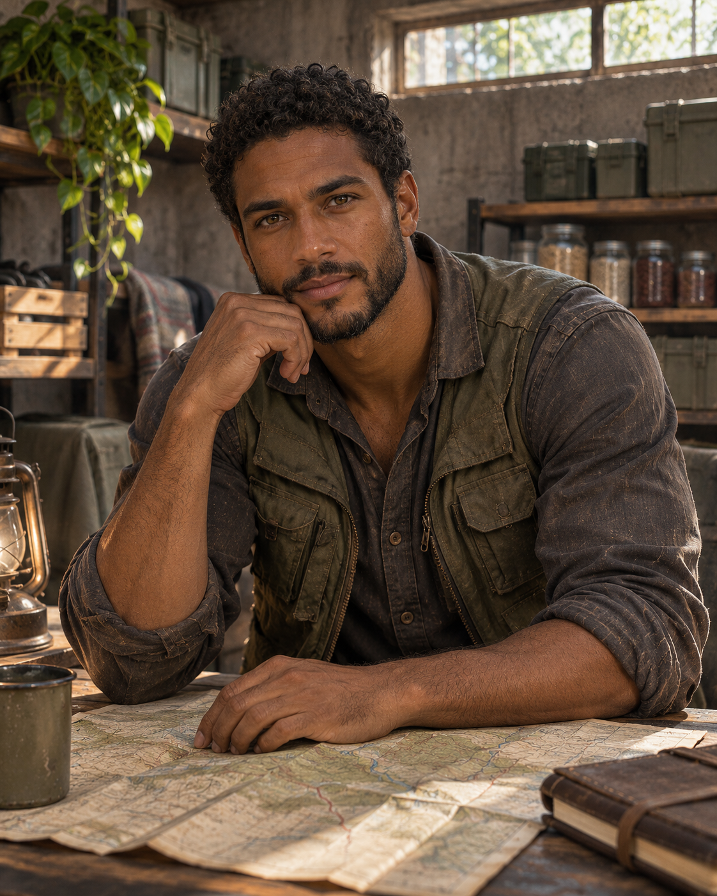

Henry Winchester
34 ANOS // PRESENTEHenry era adolescente quando o Dia D virou a rotina da família de cabeça para baixo. Como o mais velho, tentou transformar responsabilidade em proteção absoluta. No presente, ajuda a organizar mantimentos e rotas de retorno entre abrigos. Ainda aprende que honrar John não significa ocupar o lugar do pai; significa enxergar cada pessoa que depende do caminho.
TRAJETÓRIA PROPOSTA // REVISÁVEL